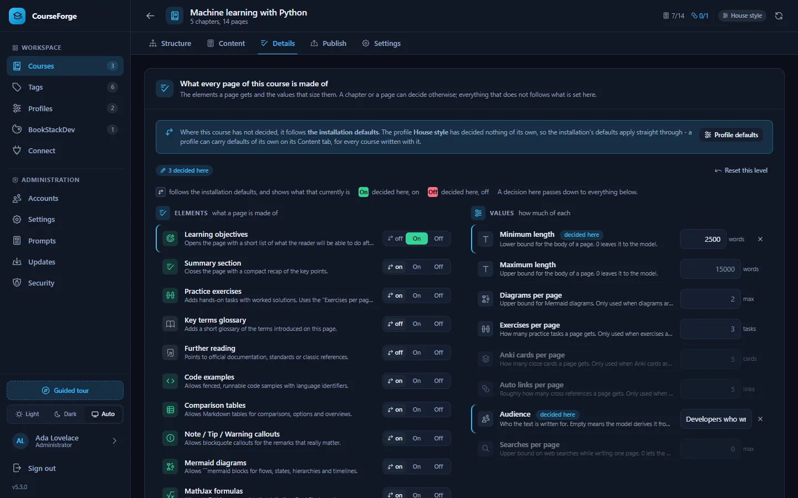

Build a course
Content details
The elements a page is made of and the values that size them, decided once and inherited from the installation down to a single page.
Every page is assembled from elements that can be switched on or off - a summary, exercises, diagrams, formulas, Anki cards - and values that size them: minimum and maximum length, how many exercises, for which audience. Both are decided at five levels and inherited downwards.
| Level | Where | Typical use |
|---|---|---|
| Installation | config/defaults.json, overridden on Administration › Settings › Course defaults |
The baseline for a whole installation that teaches one subject to one audience. |
| Profile | Profiles › Content defaults | A house style shared by every course written with that profile. |
| Course | The course's Details tab | What this course needs. |
| Chapter | The Content tab's inspector with a chapter selected | A chapter of exercises, a chapter without code. |
| Page | The Content tab's inspector, details tab | The one page that needs a diagram budget of five. |


Deciding, or inheriting#
Below the installation, every element has a three-way switch:
| Position | Meaning |
|---|---|
| ↳ on / ↳ off | inherit - the arrow shows what the level above currently resolves to |
| On | force on, here and for everything below |
| Off | force off, here and for everything below |
A value box shows your own number, or nothing with the inherited number as a greyed placeholder; the ✕ goes back to inheriting. A value whose element is currently off is dimmed, because it changes nothing.
Only deviations are stored. A course with nothing overridden carries an empty settings object, so changing a default reaches every course that never disagreed with it - including new defaults that an update brings. The Details tab says where its "inherit" points: the profile "House style" or the installation defaults, with a button to open the profile.
The Details tab also lists every chapter and page that overrides something, with a one-click way to make it follow the course again.
The elements#
| Element | Default | What it adds to a page |
|---|---|---|
| Learning objectives | off | Opens the page with a short list of what the reader will be able to do afterwards. |
| Summary section | on | Closes the page with a compact recap of the key points. |
| Practice exercises | on | Adds hands-on tasks with worked solutions. Uses the "Exercises per page" value. |
| Key terms glossary | off | Adds a short glossary of the terms introduced on this page. |
| Further reading | off | Points to official documentation, standards or classic references. |
| Code examples | on | Allows fenced, runnable code samples with language identifiers. |
| Comparison tables | on | Allows Markdown tables for comparisons, options and overviews. |
| Note / Tip / Warning callouts | on | Allows blockquote callouts for the remarks that really matter. |
| Mermaid diagrams | on | Allows ```mermaid blocks for flows, states, hierarchies and timelines. |
| MathJax formulas | on | Allows LaTeX formulas using the delimiters BookStack renders. |
| Emojis | on | Allows a handful of emojis in headings, callouts and do/don't markers. |
| Anki cloze cards | off | Appends an importable cloze-deletion card set. Uses the "Anki cards" value. |
| Auto links | off | Lets the AI drop (🔗 Title) cross references, which CourseForge turns into real BookStack links after publishing. |
| Web research | off | Look up the current state of the topic before writing - latest versions, current documentation, recent releases - and cite what was found. Costs money on most providers, and a client connected over MCP does its own searching instead. |
Switching an element off is not the same as leaving it out: CourseForge sends an explicit instruction not to produce it, because models fall back on their own habits when a topic is simply not mentioned. Each element has two prompt slots - one sent when it is on, one when it is off - in the Content details group of the prompt library.
The values#
| Value | Default | Placeholder | What it sizes |
|---|---|---|---|
| Minimum length | 3000 words | {{min_length}} |
Lower bound for the body of a page. 0 leaves it to the model. |
| Maximum length | 15000 words | {{max_length}} |
Upper bound for the body of a page. 0 leaves it to the model. |
| Diagrams per page | 2 max | {{diagram_max}} |
Upper bound for Mermaid diagrams. Only used when diagrams are enabled. |
| Exercises per page | 3 tasks | {{exercise_count}} |
How many practice tasks a page gets. Only used when exercises are enabled. |
| Anki cards per page | 5 cards | {{anki_cards}} |
How many cloze cards a page gets. Only used when Anki cards are enabled. |
| Auto links per page | 5 links | {{link_count}} |
Roughly how many cross references a page gets. Only used when auto links are enabled. |
| Audience | - | {{audience}} |
Who the text is written for. Empty means the model derives it from the course topic. |
| Searches per page | 0 max | {{research_max_searches}} |
Upper bound on web searches while writing one page. 0 lets the model decide how much to look up. Only used where web research is switched on. |
The length contract asks for a page between the minimum and maximum. A value can be left empty at every level, in which case its instruction is not sent.
Changing the baseline#
Administration › Settings › Course defaults shows every element and value, drawn the way the Details tab draws them but with a two-way switch, because there is nothing above the installation to inherit from. Changing one writes an override into data/config.json and leaves the shipped config/defaults.json alone. Reset drops the override and hands the decision back to the release.
Warning
Because only deviations are stored below the installation, changing a course default moves every course, chapter and page that never disagreed with it. That is the point - but it is worth knowing before you change one on an installation with courses already in it.
Adding an element#
The catalogue lives in config/defaults.json under details, as features and params. A new element is one entry there plus its two prompt slots - no code change, no migration. Its settings row, its Details row and its MCP support appear by themselves.
Over MCP#
| Tool | Does |
|---|---|
get_detail_catalogue |
Every element and value with its default and description. |
get_details |
What applies at one level (course, chapter or page) and where each answer comes from. |
set_details / reset_details |
Decide or go back to inheriting. Features as 1, -1 or 0. |
list_detail_overrides |
Every chapter and page that overrides anything, in one call. |
set_profile_details |
The same for a profile. |
The installation baseline is reached with set_settings, by the keys details.features.<element>.default and details.params.<value>.default.